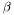
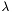

The syntax of the ears program is the following:
ears <command> <paramfile> [debug_level]
Where
<command> is either ef (for entity finding) or ep (for entity profiling)<paramfile> is a parameter file (see this page for the description of possible parameters)debug_level (optionally) is the reporting level
See also: http://code.google.com/p/ears/wiki/Parameters
index Location of the Lemur/Indri indexmodel Association finding model1 : Model 12 : Model 2associationFile File with document-entity associationsqueryFile File with queries (topics)outputFile Output file
smoothingMethod Smoothing methoddirichlet : Dirichlet (default)jm : Jelinek-MercersmoothingParam Smoothing parameter ( for Dirichlet,  for Jelinek-Mercer smoothing)associationFileFormat Association file format (Possible values: 0 (default), 1, ..., 7)entityAliasMapping File defining a mapping of EntityAlias values to EntityID-s. (Obligatory, when associationFileFormat is set to 2, 3, 6, or 7.)outputFileFormat Output file format (Possible values: 0 (defult) or 1)outputNum Number of results to output (entities for entity finding, topics for entity profiling). Default: all results.runID runID for TREC style output files (outputFileFormat=0)topDocNum (Model 2 only) Number of top relevant documents considered per query. Default: consider all documents.smoothSupportFile (Model 2 only) Smoothing support file
See also: http://code.google.com/p/ears/wiki/Logging
debugall Intended to turn on all loggingdebug Fine-grained informational eventsinfo Informational messages (Default)warning Only errors and warningserror Intended to turn off logging 1.5.6